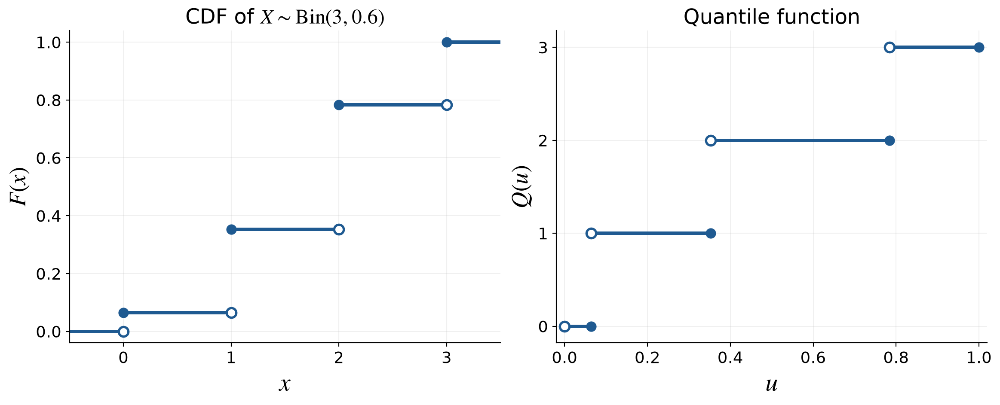
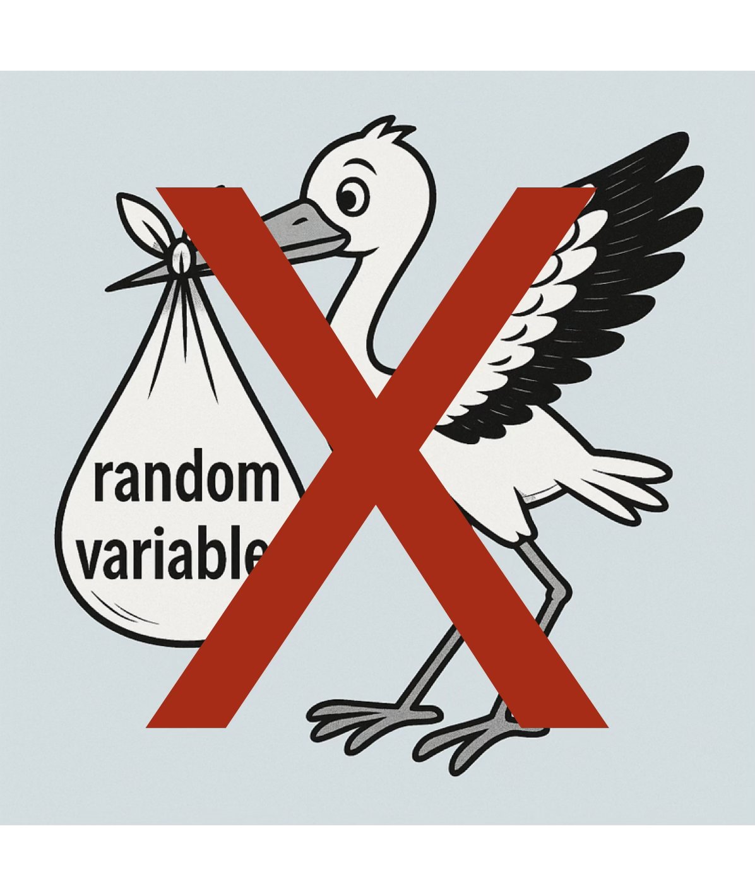
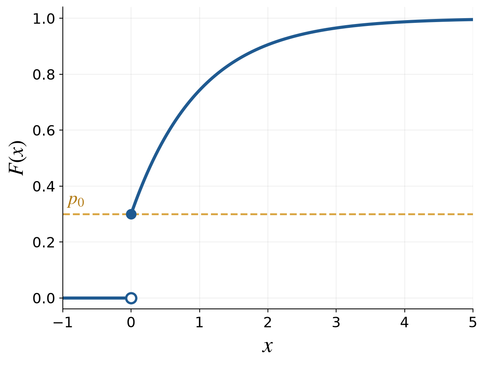

MATH 565 — Fall 2026
Generating Samples
September 3, 2026
From Uniformity to a Target Distribution

(Quasi-)Random
Number Generation
Number Generation
Where do random variables come from?
(Quasi-)Random
Number Generation
Number Generation
- Algorithms generate sequences—typically in \([0,1]\)—designed to mimic IID uniform random variables
- Pseudorandom number generators are tested so that their output looks IID random in many demanding ways
- Parallel computation requires special care: streams must not overlap or acquire unintended dependence
- RANDU is a classic warning: simple-looking output can conceal severe higher-dimensional structure
- Physical generators may supply genuine randomness, but do not by themselves guarantee IID samples from the desired distribution

Uniform numbers are the raw material; a transformation produces the target distribution
The quantile transform
(Quasi-)Random
Number Generation
Number Generation
A sampling design supplies
\[ U_i\sim\Unif[0,1],\qquad i=0,1,\ldots \]
The design may be IID, Latin hypercube, low discrepancy, or something else. For a target cumulative distribution function \(F\), define
\[ Q(u):=\inf\{x\in\reals:F(x)\ge u\} \]
Then \(Q(u)\le x \iff u\le F(x)\)
For \(X:=Q(U)\)
\[ \Prob(X\le x)=\Prob\{Q(U)\le x\} =\Prob\{U\le F(x)\}=F(x) \]
Thus each \(X_i:=Q(U_i)\) has the target CDF \(F\)
IID inputs yield IID targets
Other designs (Latin hypercube, low discrepancy, …) retain their dependence structure
Try the quantile-transform examples in the companion GeneratingSamples notebook
Binomial random numbers
(Quasi-)Random
Number Generation
Number Generation
Suppose \(X\sim\Bin(3,0.6)\)
| \(x\) | \(0\) | \(1\) | \(2\) | \(3\) |
|---|---|---|---|---|
| PMF \(\varrho_X(x)\) | \(0.4^3\) \(=0.064\) |
\(3(0.6)(0.4^2)\) \(=0.288\) |
\(3(0.6^2)(0.4)\) \(=0.432\) |
\(0.6^3\) \(=0.216\) |
| \(x\in\) | \([0,1)\) | \([1,2)\) | \([2,3)\) | \([3,\infty)\) |
| CDF \(F(x)\) | \(0.064\) | \(0.352\) | \(0.784\) | \(1\) |
| \(u\in\) | \((0,0.064]\) | \((0.064,0.352]\) | \((0.352,0.784]\) | \((0.784,1]\) |
| Quantile \(Q(u)\) | \(0\) | \(1\) | \(2\) | \(3\) |
E.g., \(U_0=0.63\), \(U_1=0.02\), and \(U_2=0.47\) produce \(X_0=2\), \(X_1=0\), and \(X_2=2\)
\(\exstar\) If \(u=0.70\), what value does the inverse transform produce? What about \(u=0.90\)?
Zero-inflated exponential random numbers
(Quasi-)Random
Number Generation
Number Generation
CDF
Let \(X\) be nonnegative with
- Probability \(p_0\) of being zero and
- Otherwise an exponential distribution with rate (mean\({}^{-1}\)) \(\lambda\)
\[ \Prob(X=0)=p_0, \qquad X\mid X>0\sim\Exp(\lambda) \]
Its CDF is
\[ F(x)= \begin{cases} 0, & x<0,\\ p_0, & x=0,\\ p_0+(1-p_0)(1-\me^{-\lambda x}), & x>0 \end{cases} \]
For the plot, \(p_0=0.3\) and \(\lambda=1\)

Gaussian mixture random numbers
(Quasi-)Random
Number Generation
Number Generation
Let the one-dimensional target be a Gaussian mixture:
\[ X\sim p\Norm(\mu_1,\sigma_1^2)+(1-p)\Norm(\mu_2,\sigma_2^2), \qquad 0<p<1 \]
Writing \(\phi\) and \(\Phi\) for the standard normal PDF and CDF,
\[\begin{align*} \varrho_X(x) &=\frac{p}{\sigma_1}\phi\!\left(\frac{x-\mu_1}{\sigma_1}\right) +\frac{1-p}{\sigma_2}\phi\!\left(\frac{x-\mu_2}{\sigma_2}\right),\\ F_X(x) &=p\Phi\!\left(\frac{x-\mu_1}{\sigma_1}\right) +(1-p)\Phi\!\left(\frac{x-\mu_2}{\sigma_2}\right) \end{align*}\]
The PDF and CDF have analytic formulas, but the mixture quantile \(Q=F_X^{-1}\) generally has no analytic closed form
Random Vectors and Stochastic Processes
(Quasi-)Random
Number Generation
Number Generation
Independent marginals
(Quasi-)Random
Number Generation
Number Generation
For \(\vX=(X_1,\ldots,X_d)\) with independent marginals
\[ \vX=\bigl(Q_1(U_1),\ldots,Q_d(U_d)\bigr), \qquad \vU\sim\Unif[0,1]^d \]
where \(Q_j\) is the quantile function for the target distribution of \(X_j\)
Store \(n\) sampled vectors as an \(n\times d\) array:
\[ \mX= \begin{pmatrix} X_{11} & X_{12} & \cdots & X_{1d}\\ \vdots & \vdots & & \vdots\\ X_{n1} & X_{n2} & \cdots & X_{nd} \end{pmatrix} \]
Rows are samples
Columns are coordinates
Multivariate normal sampling
(Quasi-)Random
Number Generation
Number Generation
Let \(\vZ\sim\Norm(\vzero,\mI_d)\) be a column vector of \(d\) independent standard normal random variables, so
\[ \Ex(\vZ)=\vzero, \qquad \Ex(\vZ\vZ^\mathsf{T})=\mI_d \]
Define \(\vX=\mA\vZ+\vmu\). Then
\[\begin{align*} \Ex(\vX) &= \vmu,\\ \cov(\vX) &= \Ex\bigl[(\vX-\vmu)(\vX-\vmu)^\mathsf{T}\bigr] =\Ex(\mA\vZ\vZ^\mathsf{T}\mA^\mathsf{T})\\ &=\mA\Ex(\vZ\vZ^\mathsf{T})\mA^\mathsf{T} =\mA\mA^\mathsf{T} \end{align*}\]
Every linear combination of the components of \(\vX\) is normal; thus, if \(\mSigma=\mA\mA^\mathsf{T}\),
\[ \vX=\mA\vZ+\vmu\sim\Norm(\vmu,\mSigma) \]
Cholesky factorization
(Quasi-)Random
Number Generation
Number Generation
Concrete example
For symmetric positive-definite \(\mSigma\), Cholesky factorization gives a lower-triangular \(\mA\) such that \(\mSigma=\mA\mA^\mathsf{T}\)
For
\[ \mSigma=\begin{pmatrix}3&-1\\-1&1\end{pmatrix}, \qquad \mA=\begin{pmatrix}a_{11}&0\\a_{21}&a_{22}\end{pmatrix} \]
matching the entries of \(\mSigma=\mA\mA^\mathsf{T}\) gives
\[\begin{align*} a_{11}^2&=3, &a_{11}a_{21}&=-1, &a_{21}^2+a_{22}^2&=1 \end{align*}\]
Hence
\[ a_{11}=\sqrt3, \qquad a_{21}=-\frac1{\sqrt3}, \qquad a_{22}=\sqrt{\frac23}, \qquad \mA_{\mathrm{Chol}} =\begin{pmatrix}\sqrt3&0\\-1/\sqrt3&\sqrt{2/3}\end{pmatrix} \]
Principal-component (PCA) factorization
(Quasi-)Random
Number Generation
Number Generation
For the same covariance matrix as in the Cholesky example,
\[ \mSigma=\begin{pmatrix}3&-1\\-1&1\end{pmatrix}, \]
let \(c=\cos(\mpi/8)\) and \(s=\sin(\mpi/8)\). The ordered eigendecomposition is
\[ \mV=(\vv_1\ \vv_2)= \begin{pmatrix}c&s\\-s&c\end{pmatrix}, \qquad \mLambda=\operatorname{diag}(2+\sqrt2,\,2-\sqrt2) \]
The PCA factor simplifies to
\[ \mA_{\mathrm{PCA}}=\mV\mLambda^{1/2} =\begin{pmatrix} 1+1/\sqrt2&1-1/\sqrt2\\ -1/\sqrt2&1/\sqrt2 \end{pmatrix} \]
Thus \(\mA_{\mathrm{PCA}}\mA_{\mathrm{PCA}}^\mathsf{T} =\mV\mLambda\mV^\mathsf{T}=\mSigma\), just as for the Cholesky factor
Gaussian processes
Probability
A Gaussian process is a random function whose values at any finite collection of inputs form a multivariate normal random vector
\[ g\sim\GP(\mu,K) \]
means
\[\begin{align*} \Ex[g(t)] &= \mu(t),\\ \Ex\bigl[\{g(t)-\mu(t)\}\{g(x)-\mu(x)\}\bigr] &= K(t,x) \end{align*}\]
For inputs \(t_1,\ldots,t_d\)
\[ \bigl(g(t_1),\ldots,g(t_d)\bigr)^\mathsf{T} \sim\Norm(\vmu,\mSigma), \qquad \Sigma_{jk}=K(t_j,t_k) \]
Brownian motion
Probability
Definition
Brownian motion \(B\) is the Gaussian process with
\[ \mu(t)=0, \qquad K(t,x)=\min(t,x), \qquad t,x\ge0 \]
For \(0=t_0<t_1<\cdots<t_d\)
\[ \bigl(B(t_1),\ldots,B(t_d)\bigr)^\mathsf{T} \sim\Norm(\vzero,\mSigma), \qquad \Sigma_{jk}=\min(t_j,t_k) \]
The covariance structure implies independent normal increments
Geometric Brownian motion
Probability
For \(S_0>0\), drift \(\gamma\), and volatility \(\sigma>0\), define
\[ S(t)=S_0\exp\!\left[ \left(\gamma-\frac{\sigma^2}{2}\right)t+\sigma B(t) \right] \]
Then \(S(t)>0\) and its multiplicative increments are lognormal
\(\exstar\) Using \(B(t)\sim\Norm(0,t)\) and the normal moment-generating function, show that \(\Ex[S(t)]=S_0\me^{\gamma t}\). Hence determine \(\gamma\) so that \(\Ex[S(t)]=S_0\me^{rt}\).
The correction \(-\sigma^2/2\) makes \(\gamma\) the mean growth rate; the median growth rate is \(\gamma-\sigma^2/2\)
Option payoffs and prices
Quantitative
Finance
Finance
The fair price is the expected discounted payoff
\[ \mu=\Ex(\text{discounted payoff}) \]
\[\begin{align*} K &= \text{the }\alert{\text{strike price}}, & T &= \text{the }\alert{\text{time to maturity}},\\ t_j &= jT/d, & S_j &= S(t_j), \qquad j=0,\ldots,d \end{align*}\]
| Contract | Discounted payoff |
|---|---|
| European call | \(\me^{-rT}\max\{S_d-K,0\}\) |
| European put | \(\me^{-rT}\max\{K-S_d,0\}\) |
| Arithmetic Asian call | \(\displaystyle \me^{-rT}\max\left\{\frac1T\int_0^T S(t)\,\dif t-K,0\right\}\approx \me^{-rT}\max\{A_d-K,0\}\) |
QMCPy FinancialOption offers the right and trapezoidal rules:
\[ \begin{aligned} A_d^{\mathrm{right}} &=\frac1d\sum_{j=1}^d S_j, & A_d^{\mathrm{trap}} &=\frac1d\left(\frac{S_0}{2}+\sum_{j=1}^{d-1}S_j+\frac{S_d}{2}\right) \end{aligned} \]
Low Discrepancy Sampling
Low
Discrepancy
Discrepancy
Discrepancy
Measures
Measures
What does low discrepancy mean?
Low
Discrepancy
Discrepancy
Discrepancy
Measures
Measures
Relaxing the requirement that \(\vU_0,\ldots,\vU_{n-1}\) be IID allows carefully constructed samples to cover \([0,1]^d\) more evenly
\[ \vU_0,\ldots,\vU_{n-1}\ \LDsim\ \Unif[0,1]^d \]
The empirical distribution of the sample is close to the uniform distribution
Discrepancy quantifies that difference; precise definitions come later
Low discrepancy replaces independent placement by deliberate coverage
Low discrepancy sequences
Low
Discrepancy
Discrepancy
Discrepancy
Measures
Measures
Important families include
- digital sequences, especially Sobol’ sequences
- lattice sequences
- Halton sequences
- Kronecker sequences
They are available in deterministic and randomized forms through SciPy and QMCPy
In software arrays rows correspond to samples and columns to coordinates
Why coordinate order matters
Low
Discrepancy
Discrepancy
Discrepancy
Measures
Measures
Return to the PCA factorization:
\[ \vX-\vmu =\sqrt{2+\sqrt2}\,\vv_1\Phi^{-1}(U_1) +\sqrt{2-\sqrt2}\,\vv_2\Phi^{-1}(U_2) \]
so \(U_1\) drives \(\lambda_1/(\lambda_1+\lambda_2)=(2+\sqrt2)/4\approx85.4\%\) of the total marginal variance
- IID inputs: column order does not change the distribution
- Low discrepancy inputs: column order changes which coordinate drives each principal direction
Put the largest eigenvalues first so dominant directions use the low-numbered coordinates, where many low discrepancy constructions are strongest
More Advanced Direct Sampling
(Quasi-)Random
Number Generation
Number Generation
Transport maps
(Quasi-)Random
Number Generation
Number Generation
The quantile transform is a one-dimensional transport
In \(d\) dimensions
- Start with an easy proposal density \(\varrho_{\mathrm{prop}}\)
- Seek the target density \(\varrho_{\mathrm{tar}}\) through an invertible, differentiable map \(T:\reals^d\to\reals^d\), where \(\vZ\sim\varrho_{\mathrm{prop}}\) and \(\vX=T(\vZ)\)
The map transports the proposal to the target when \(\varrho_{\mathrm{tar}}\bigl(T(\vz)\bigr) \left|\det\nabla T(\vz)\right| =\varrho_{\mathrm{prop}}(\vz)\)
Then, for every integrable function \(f\),
\[\begin{align*} \Ex_{\mathrm{tar}}[f(\vX)] &=\Ex_{\mathrm{prop}}[f\bigl(T(\vZ)\bigr)]\\ &\approx \frac1n\sum_{i=0}^{n-1}f\bigl(T(\vZ_i)\bigr), \qquad \vZ_0,\ldots,\vZ_{n-1}\ \IIDsim\ \varrho_{\mathrm{prop}} \end{align*}\]
An exact transport moves every proposal sample and makes the correction weight equal to one
Normalizing flow builds a flexible transport by composing manageable invertible maps, \(T=T_m\circ\cdots\circ T_1\)
Acceptance–rejection sampling
(Quasi-)Random
Number Generation
Number Generation
Ingredients
- Proposal: sample \(Z\) from known density \(\varrho_{\mathrm{prop}}\)
- Possibly unnormalized target: known \(\varrho_{\mathrm{tar}}\); desired \(X\) density \(c\varrho_{\mathrm{tar}}\) for some \(c>0\)
- Global envelope: known \(M\) with \(\varrho_{\mathrm{tar}}(x)\le M\varrho_{\mathrm{prop}}(x)\) for all \(x\)
Sampler for \(X_0,\ldots,X_{n-1}\)
\[ \begin{aligned} &i\leftarrow0\\[-0.2em] &\texttt{repeat}\\[-0.2em] &\qquad \texttt{repeat}\quad Z\sim\varrho_{\mathrm{prop}},\quad U\sim\Unif[0,1] \quad\text{independently}\\[-0.2em] &\qquad \texttt{until}\quad U\le\frac{\varrho_{\mathrm{tar}}(Z)} {M\varrho_{\mathrm{prop}}(Z)}\\[-0.2em] &\qquad X_i\leftarrow Z,\quad i\leftarrow i+1\\[-0.2em] &\texttt{until}\quad i=n \end{aligned} \]
No normalizing constant \(c\) needed
Big Ideas
Probability
Statistics
Estimation
- Start with uniform samples and transform them to the target distribution
- The generalized inverse works for discrete and continuous distributions
- Mixtures combine a discrete component choice with a conditional transform
- Independent marginal transforms do not create dependence; correlated normal vectors require a matrix factorization, and PCA can concentrate variation in early coordinates for low discrepancy sampling
- Gaussian-process sampling reduces finite collections of function values to multivariate normal sampling
- Low discrepancy points trade independent placement for more even coverage
- An exact transport moves every proposal point to the target and makes the correction weight equal to one
- Acceptance–rejection samples from an unnormalized density when a suitable proposal envelope is available